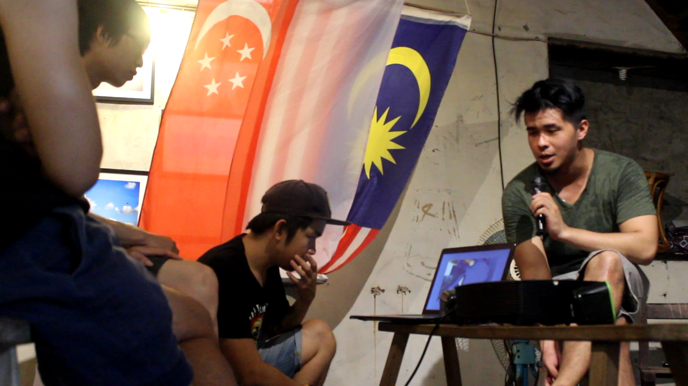
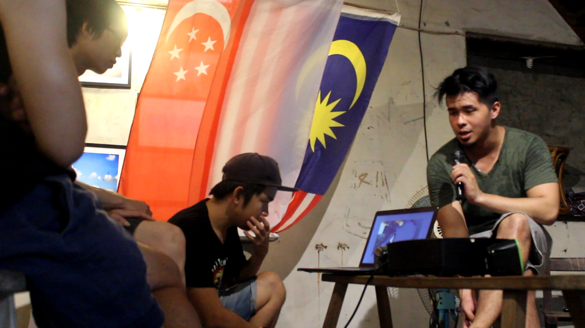

Artist Talk: I’m from Strait of Johor
Artist Talk: I’m from Strait of Johor
by N-Factory AIR Program
Featuring：Hew Wai-Yang
Time：July 03, Sun. 14:00-16:00
Venue：Neng Sheng Xing Factory - Exhibition Room
Creation process been let out!
The resident artists Qiu Weiyang will bring the closing discussion " I’m from Strait of Johor", to share his creative experience. Growing up in Malaysia, the local political, especially the history of the division between Malaysia and Singapore, deeply influenced his feelings about the environment. At the invitation of the curator, Qiu Weiyang was able to bring his story in Malaysia to the factory. What is happening in the process of moving and living in Johor Bahru, Kuala Lumpur, Singapore, Taipei and Tainan, and what kind of relationship does he have with the land and the different people on different land?
We would like to invite you to visit N-Factory Artist in Residency program on a Sunday afternoon to get a glimpse of how the artist sees this sheer, chaotic state-to-state relationship.

 
